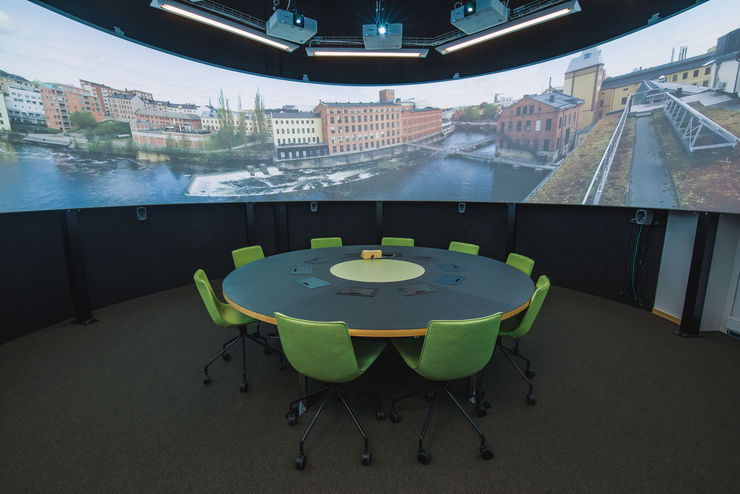
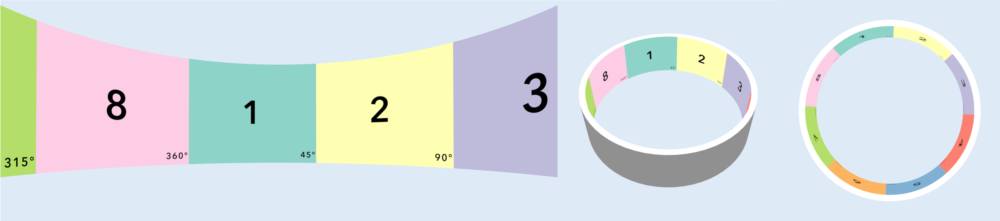

The poster presenting the results of my bachelor's thesis was submitted to the Graph Drawing Contest 2025, made it to the final selection, and took 4th place. This project idea originates from the Graph Drawing Contest 2025: Creative Topic, organized by the Symposium on Graph Drawing and Network Visualization. This symposium has been the leading annual event in the field for more than 30 years, with a strong focus on the combinatorial and algorithmic aspects of graph drawing, as well as the design of network visualization systems and interfaces The final submission must be delivered as a high-resolution PNG image with a resolution of 12288 × 1200 pixels, an aspect ratio of 10.24:1. is because the final poster will be displayed at the Norrköping Decision Arena (see the first picture)in Sweden, a state-of-the-art facility featuring a 360-degree screen. This setup allows the audience to fully immerse themselves in the graph drawing visualizations. This unique display format had a significant influence on the design of my poster and will be discussed in detail in the chapter 4 of this thesis. Thanks to Nico Reski, who created a Three.js-based preview system, it was possible to preview the final poster in a 360-degree setting (see second picture). By simulating how it would appear in the Norrköping Decision Arena, the poster could be modified and adjusted for better visualization.